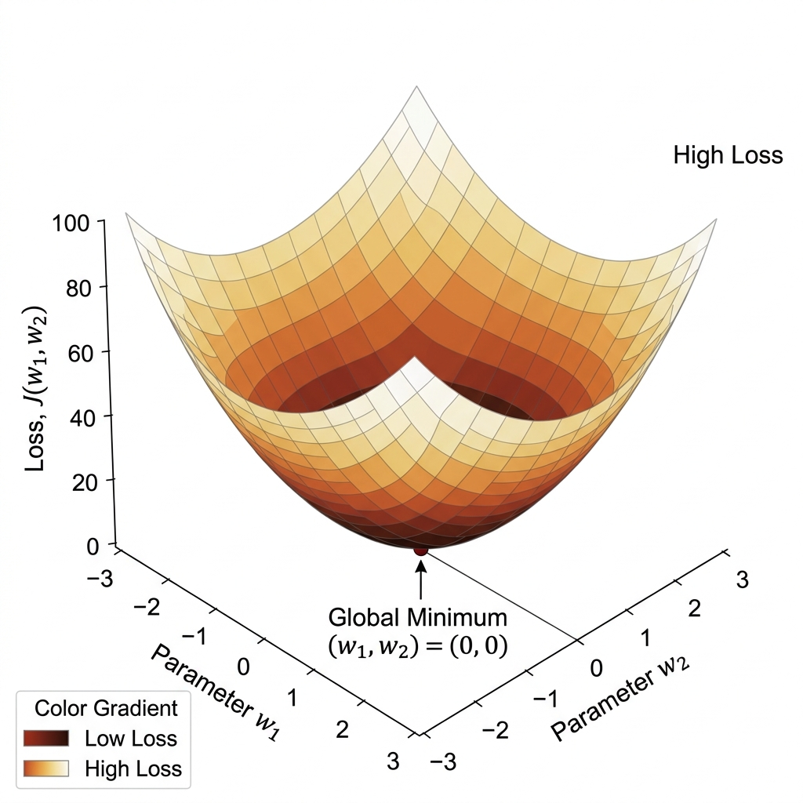
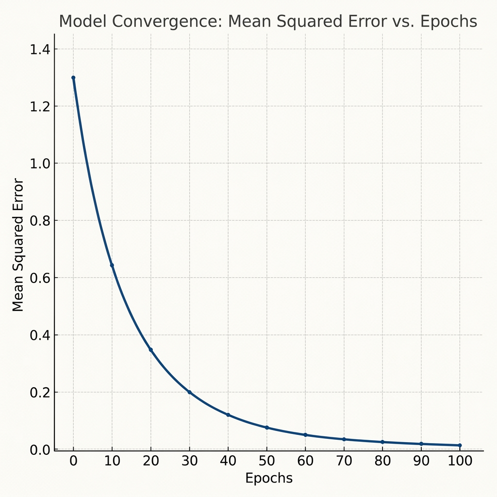

import numpy as np
def gradient_descent_raw(X, y, lr=0.01, epochs=100):
m = X.shape[0]
weights = np.zeros(X.shape[1])
for i in range(epochs):
# Matrix multiplication for predictions
predictions = np.dot(X, weights)
# Compute gradient of MSE
errors = predictions - y
gradient = (2/m) * np.dot(X.T, errors)
# Update weights
weights -= lr * gradient
return weights
Unit 1 fundamentally changed how I view algorithmic design. Prior to this, machine learning seemed like a black box of library calls. By breaking down the mathematics of hypothesis spaces and actually coding the calculus behind Gradient Descent, I learned that learning is strictly an optimization geometry problem.
The main challenge I faced was bridging the theoretical math into vectorized NumPy arrays. Understanding the transpose logic required to compute the gradient via matrix multiplication took significant debugging. Furthermore, experimenting with learning rates showed me firsthand how an aggressive step size causes the model to bounce erratically and diverge, rather than converge smoothly.
These foundational principles have direct applications to everything I build moving forward. Whether I am tuning a simple linear regressor or eventually building deep neural networks, the rules of the Loss Landscape remain the same: you must mathematically audit your cost function, or your algorithm will fail.